传智健康项目 第12章
在前面的课程中我们完成了将运营数据导出到Excel文件的功能。在企业开发中，除了常见的Excel形式报表，还有PDF形式的报表。那么如何导出PDF形式的报表呢？
1. 常见的PDF报表生成方式
1.1 iText
iText是著名的开放源码的站点sourceforge一个项目，是用于生成PDF文档的一个java类库。通过iText不仅可以生成PDF或rtf的文档，而且可以将XML、Html文件转化为PDF文件。 iText的安装非常方便，下载iText.jar文件后，只需要在系统的CLASSPATH中加入iText.jar的路径，在程序中就可以使用iText类库了。
maven坐标：
<dependency> <groupId>com.lowagie</groupId> <artifactId>itext</artifactId> <version>2.1.7</version></dependency>示例代码:
xpackage com.itheima.app;import com.lowagie.text.Document;import com.lowagie.text.DocumentException;import com.lowagie.text.Paragraph;import com.lowagie.text.pdf.PdfWriter;import java.io.FileNotFoundException;import java.io.FileOutputStream;public class ItextDemo { public static void main(String[] args) { try { Document document = new Document(); PdfWriter.getInstance(document, new FileOutputStream("D:\\test.pdf")); document.open(); document.add(new Paragraph("hello itext")); document.close(); } catch (FileNotFoundException e) { e.printStackTrace(); } catch (DocumentException e) { e.printStackTrace(); } }}1.2 JasperReports
JasperReports是一个强大、灵活的报表生成工具，能够展示丰富的页面内容，并将之转换成PDF，HTML，或者XML格式。该库完全由Java写成，可以用于在各种Java应用程序，包括J2EE，Web应用程序中生成动态内容。一般情况下，JasperReports会结合Jaspersoft Studio(模板设计器)使用导出PDF报表。
maven坐标:
xxxxxxxxxx<dependency> <groupId>net.sf.jasperreports</groupId> <artifactId>jasperreports</artifactId> <version>6.8.0</version></dependency>2. JasperReports概述
2.1 JasperReports快速体验
本小节我们先通过一个快速体验来感受一下JasperReports的开发过程。
第一步：创建maven工程，导入JasperReports的maven坐标
xxxxxxxxxx<dependency> <groupId>net.sf.jasperreports</groupId> <artifactId>jasperreports</artifactId> <version>6.8.0</version></dependency><dependency> <groupId>junit</groupId> <artifactId>junit</artifactId> <version>4.12</version></dependency>第二步：将提前准备好的jrxml文件复制到maven工程中(后面会详细讲解如何创建jrxml文件)

第三步：编写单元测试，输出PDF报表
xxxxxxxxxxpublic void testJasperReports()throws Exception{ String jrxmlPath = "D:\\ideaProjects\\projects111\\jasperdemo\\src\\main\\resources\\demo.jrxml"; String jasperPath = "D:\\ideaProjects\\projects111\\jasperdemo\\src\\main\\resources\\demo.jasper"; //编译模板 JasperCompileManager.compileReportToFile(jrxmlPath,jasperPath); //构造数据 Map paramters = new HashMap(); paramters.put("reportDate","2019-10-10"); paramters.put("company","itcast"); List<Map> list = new ArrayList(); Map map1 = new HashMap(); map1.put("name","xiaoming"); map1.put("address","beijing"); map1.put("email","xiaoming@itcast.cn"); Map map2 = new HashMap(); map2.put("name","xiaoli"); map2.put("address","nanjing"); map2.put("email","xiaoli@itcast.cn"); list.add(map1); list.add(map2); //填充数据 JasperPrint jasperPrint = JasperFillManager.fillReport(jasperPath, paramters, new JRBeanCollectionDataSource(list)); //输出文件 String pdfPath = "D:\\test.pdf"; JasperExportManager.exportReportToPdfFile(jasperPrint,pdfPath);}2.2 JasperReports原理
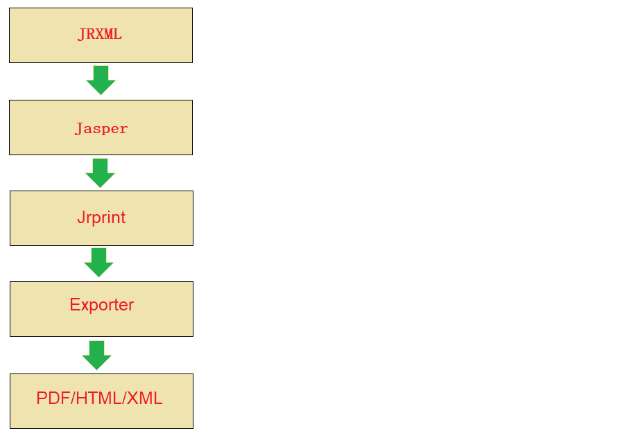
- JRXML：报表填充模板，本质是一个xml文件
- Jasper：由JRXML模板编译成的二进制文件，用于代码填充数据
- Jrprint：当用数据填充完Jasper后生成的对象，用于输出报表
- Exporter：报表输出的管理类，可以指定要输出的报表为何种格式
- PDF/HTML/XML：报表形式
2.3 开发流程
使用JasperReports导出pdf报表，开发流程如下：
- 制作报表模板
- 模板编译
- 构造数据
- 填充数据
- 输出文件
3. 模板设计器Jaspersoft Studio
Jaspersoft Studio是一个图形化的报表设计工具，可以非常方便的设计出PDF报表模板文件(其实就是一个xml文件)，再结合JasperReports使用，就可以渲染出PDF文件。
下载地址:https://community.jaspersoft.com/community-download

下载完成后会得到如下安装文件：

直接双击安装即可。
3.1 Jaspersoft Studio面板介绍
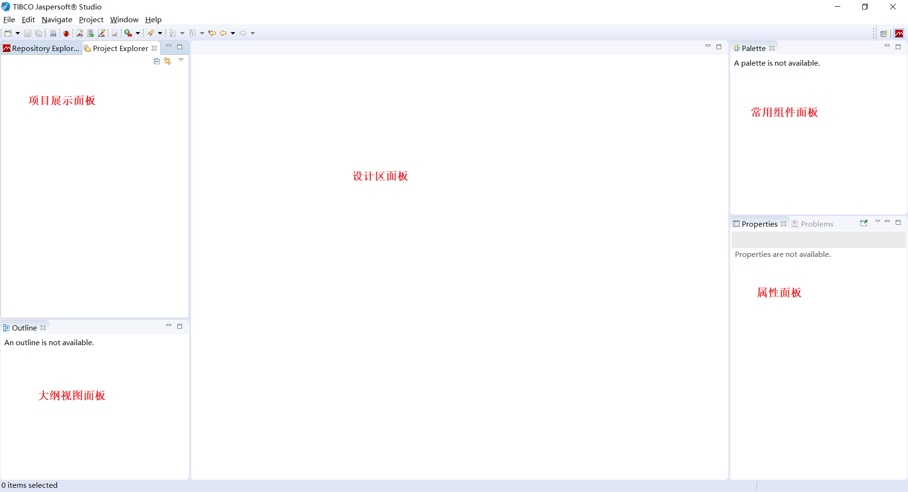
3.2 创建工程和模板文件
打开Jaspersoft Studio工具，首先需要创建一个工程，创建过程如下：
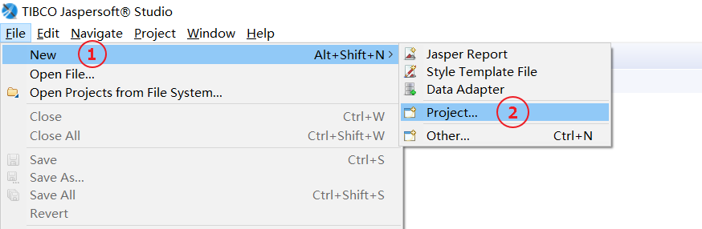
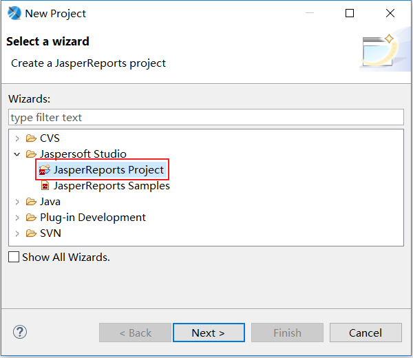
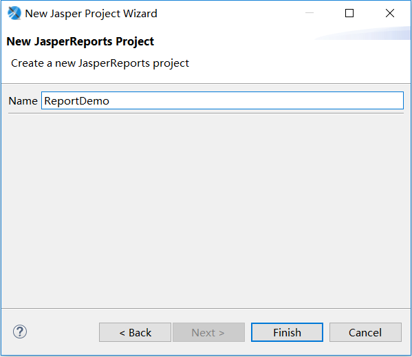

创建完工程后，可以在工程上点击右键，创建模板文件：


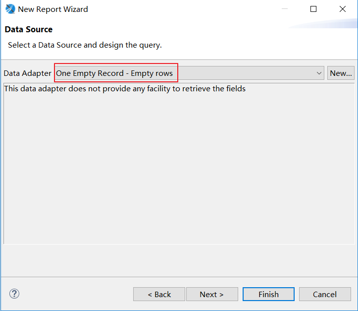
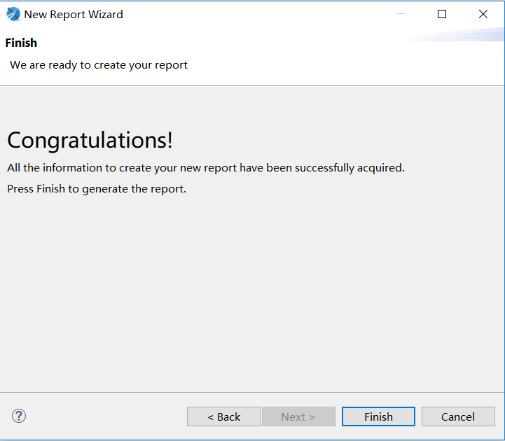

可以看到创建处理的模板文件后缀为jrxml，从设计区面板可以看到如下效果：

可以看到整个文件是可视化的，分为几大区域（Title、Page Header、Column Header等），如果某些区域不需要也可以删除。
在面板左下角可以看到有三种视图方式：Design（设计模式）、Source（源码模式）、Preview（预览模式）:
- 通过Design视图可以看到模板的直观结构和样式
- 通过Source视图可以看到文件xml源码
- 通过Preview视图可以预览PDF文件输出后的效果
通过右侧Palette窗口可以看到常用的元素：
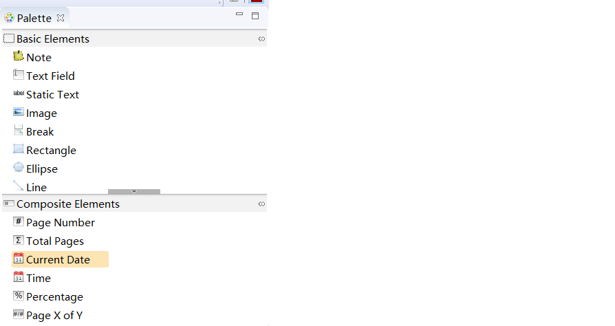
3.3 设计模板文件
3.3.1 增减Band
可以根据情况删除或者增加模板文件中的区域（称为Band），例如在Page Header区域上点击右键，选择删除菜单：
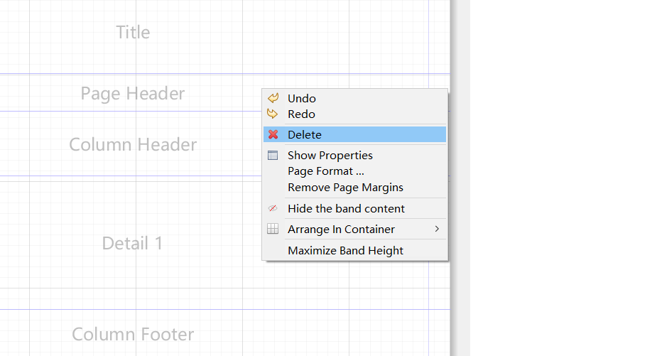
其中Detail区域可以添加多个，其他区域只能有一个。
3.3.2 将元素应用到模板中
3.3.2.1 Image元素
从右侧Palette面板中选择Image元素（图片元素），拖动到Title区域：

弹出如下对话框，有多种创建模式，选择URL模式，并在下面输入框中输入一个网络图片的连接地址：


可以选中图片元素，鼠标拖动调整位置，也可以通过鼠标调整图片的大小。
调整完成后，可以点击Preview进入预览视图，查看PDF输出效果：

点击Source进入源码视图，查看xml文件内容：
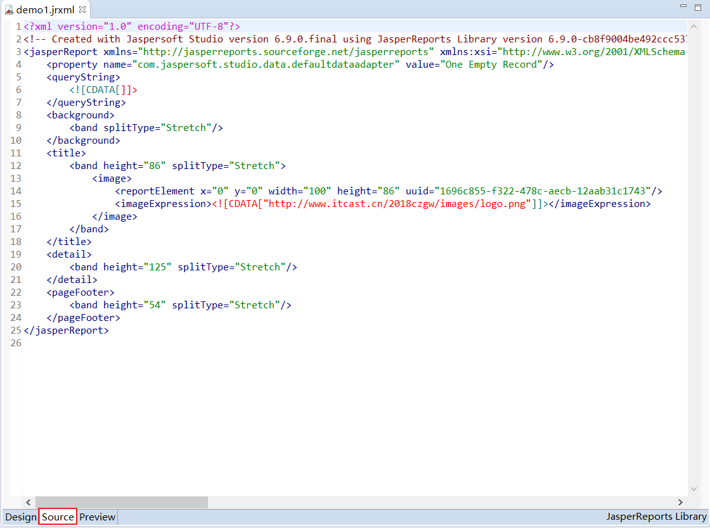
其实我们上面创建的demo1.jrxml模板文件，本质上就是一个xml文件，只不过我们不需要自己编写xml文件的内容，而是通过Jaspersoft Studio这个设计器软件进行可视化设计即可。
3.3.2.2 Static Text元素
Static Text元素就是静态文本元素，用于在PDF文件上展示静态文本信息：

双击Title面板中的Static Text元素，可以修改文本内容：

选中元素，也可以调整文本的字体和字号：

点击Preview进入预览视图，查看效果：
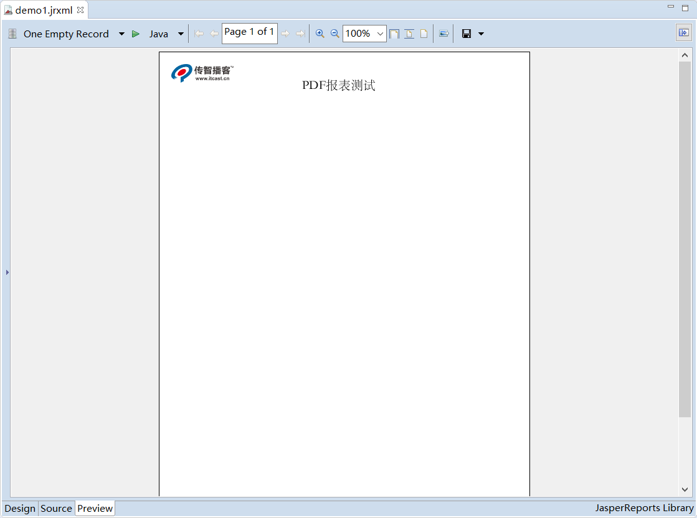
3.3.2.3 Current Date元素
Current Date元素用于在报表中输出当前系统日期，将改元素拖动到Title区域：
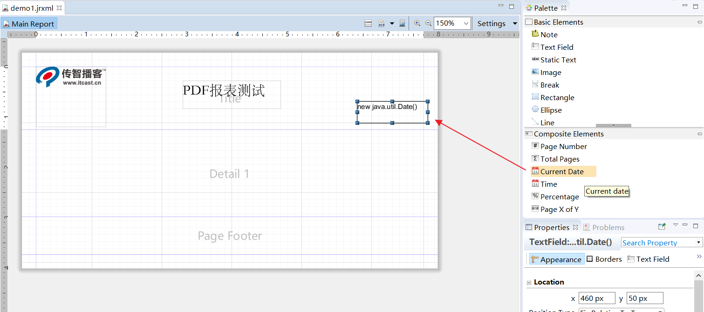
预览输出效果：

默认日期输出格式如上图所示，可以回到设计视图并选中元素，在Properties面板中的Text Field子标签中修改日期输出格式：

修改日期格式：

保存文件后重新预览：
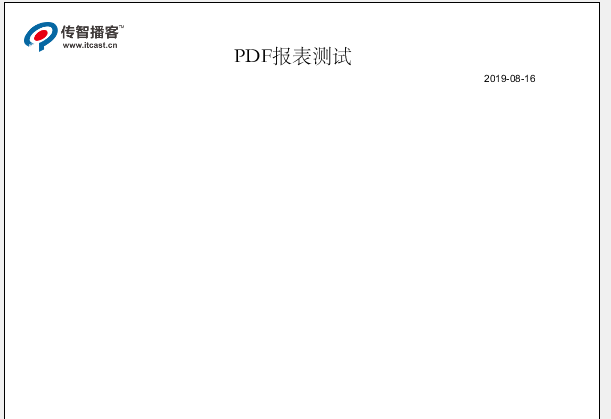
3.3.3 动态数据填充
上面我们在PDF文件中展示的都是一些静态数据，那么如果需要动态展示一些数据应该如何实现呢？我们可以使用Outline面板中的Parameters和Fields来实现。

Parameters通常用来展示单个数据，Fields通常用来展示需要循环的列表数据。
3.3.3.1 Parameters
在Parameters上点击右键，创建一个Parameter参数：

可以在右侧的Properties面板中修改刚才创建的参数名称：

将刚才创建的Parameter参数拖动到面板中：

进入预览视图，查看效果：

由于模板中我们使用了Parameter动态元素，所以在预览之前需要为其动态赋值：
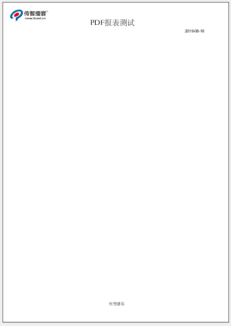
注意：由于我们是在Jaspersoft Studio软件中进行预览，所以需要通过上面的输入框动态为Parameter赋值，在后期项目使用时，需要我们在Java程序中动态为Parameter赋值进行数据填充。
3.3.3.2 Fields
使用Fields方式进行数据填充，既可以使用jdbc数据源方式也可以使用JavaBean数据源方式。
- jdbc数据源数据填充
第一步：在Repository Explorer面板中，在Data Adapters点击右键，创建一个数据适配器
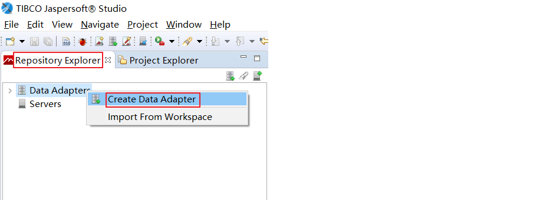
第二步：选择Database JDBC Connection
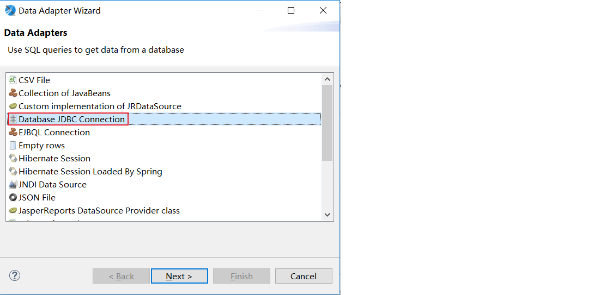
第三步：选择mysql数据库，并完善jdbc连接信息

为了能够在Jaspersoft Studio中预览到数据库中的数据，需要加入MySQL的驱动包
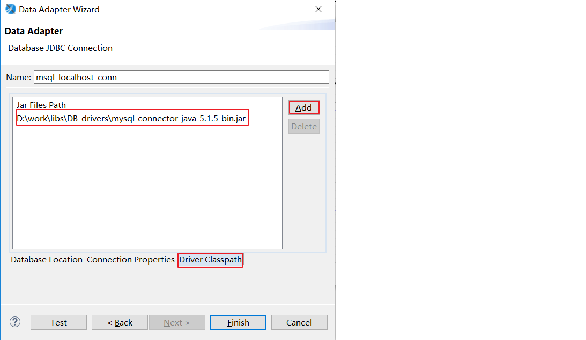
第四步：在Outline视图中，右键点击工程名，选择Database and Query菜单

第五步：在弹出的对话框中选择刚刚创建的JDBC数据库连接选项

第六步：在弹出对话框中Language选择sql，在右侧区域输入SQL语句并点击Read Fields按钮

可以看到通过点击上面的Read Fields按钮，已经读取到了t_setmeal表中的所有字段信息并展示在了下面，这些字段可以根据需要进行删除或者调整位置
第七步：在Outline视图中的Fields下可以看到t_setmeal表中相关字段信息，拖动某个字段到设计区的Detail区域并调整位置

可以看到，在拖动Fields到设计区时，同时会产生两个元素，一个是静态文本，一个是动态元素。静态文本相当于表格的表头，可以根据需要修改文本内容。最终设计完的效果如下：
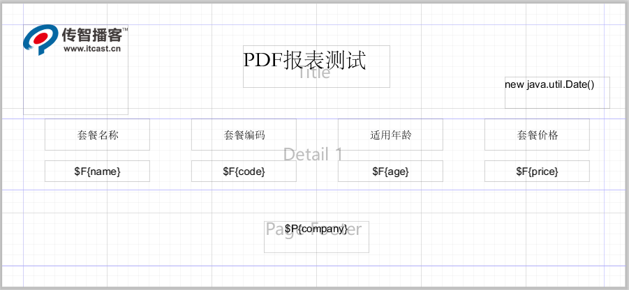
第八步：使用Preview预览视图进行预览
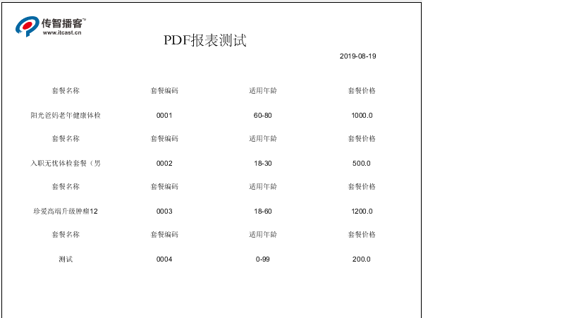
通过上图可以看到，虽然列表数据展示出来了，但是展示的还存在问题。在每条数据遍历时表头也跟着遍历了一遍。这是怎么回事呢？这是由于我们设计的表头和动态Fields都在Detail区域。为了能够解决上面的问题，需要将表头放在Column Header区域，将动态Fields放在Detail区域。具体操作如下：
1、在Outline视图的Column Header点击右键创建出一个区域

2、将Detail下的静态文本拖动到Column Header下

拖动完成后如下：

3、调整静态文本在Column Header区域的位置，最终效果如下

4、预览查看效果

- JavaBean数据源数据填充
第一步：复制上面的demo1.jrxml文件，名称改为demo2.jrxml

修改Report Name：

第二步：打开demo2.jrxml文件，将detail区域中的动态Fields元素删除
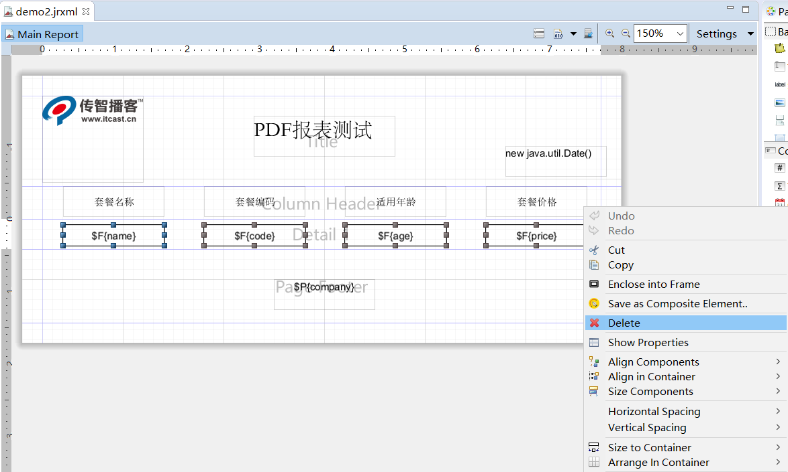
第三步：将Outline面板中Fields下的字段全部删除
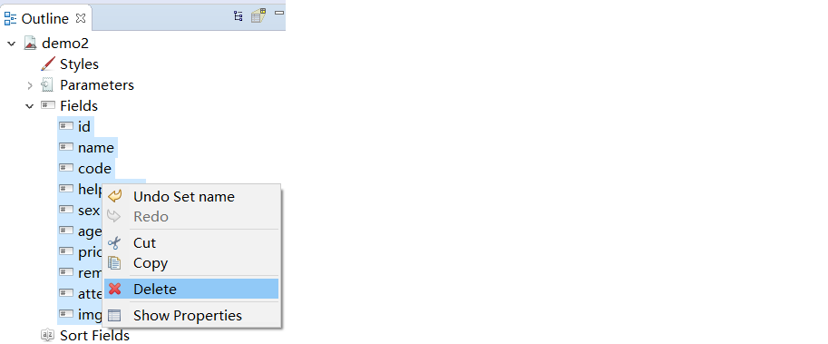
第四步：清除JDBC数据源和相关SQL语句


第五步：在Fields处点击右键创建新的Field
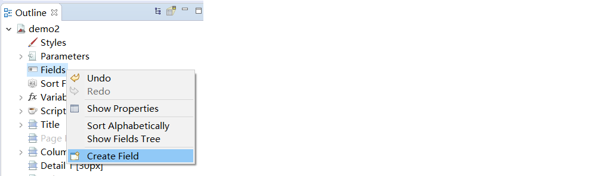
创建完成后在Properties属性面板中修改Field的名称
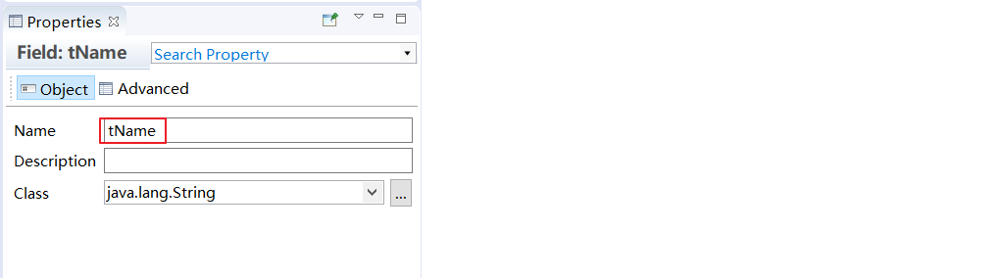

第六步：将创建的Fields拖动到Detail区域并调整好位置

注意：使用此种JavaBean数据源数据填充方式，无法正常进行预览，因为这些动态Fields需要在Java程序中动态进行数据填充。
3.4 结合JasperReports输出报表
前面我们已经使用Jaspersoft Studio设计了两个模板文件：demo1.jrxml和demo2.jrxml。其中demo1.jrxml的动态列表数据是基于JDBC数据源方式进行数据填充，demo2.jrxml的动态列表数据是基于JavaBean数据源方式进行数据填充。本小节我们就结合JasperReports的Java API来完成pdf报表输出。
3.4.1 JDBC数据源方式填充数据
第一步：创建maven工程，导入相关maven坐标
xxxxxxxxxx<dependency> <groupId>net.sf.jasperreports</groupId> <artifactId>jasperreports</artifactId> <version>6.8.0</version></dependency><dependency> <groupId>junit</groupId> <artifactId>junit</artifactId> <version>4.12</version></dependency><dependency> <groupId>mysql</groupId> <artifactId>mysql-connector-java</artifactId> <version>5.1.47</version></dependency>第二步：将设计好的demo1.jrxml文件复制到当前工程的resources目录下

第三步：编写单元测试
xxxxxxxxxxpublic void testReport_JDBC() throws Exception{ Class.forName("com.mysql.jdbc.Driver"); Connection connection = DriverManager.getConnection("jdbc:mysql://localhost:3306/health", "root", "root"); String jrxmlPath = "D:\\ideaProjects\\projects111\\jasperreports_test\\src\\main\\resources\\demo1.jrxml"; String jasperPath = "D:\\ideaProjects\\projects111\\jasperreports_test\\src\\main\\resources\\demo1.jasper"; //编译模板 JasperCompileManager.compileReportToFile(jrxmlPath,jasperPath); //构造数据 Map paramters = new HashMap(); paramters.put("company","传智播客"); //填充数据---使用JDBC数据源方式填充 JasperPrint jasperPrint = JasperFillManager.fillReport(jasperPath, paramters, connection); //输出文件 String pdfPath = "D:\\test.pdf"; JasperExportManager.exportReportToPdfFile(jasperPrint,pdfPath);}通过上面的操作步骤可以输出pdf文件，但是中文的地方无法正常显示。这是因为JasperReports默认情况下对中文支持并不友好，需要我们自己进行修复。具体操作步骤如下：
1、在Jaspersoft Studio中打开demo1.jrxml文件，选中中文相关元素，统一将字体设置为“华文宋体”并将修改后的demo1.jrxml重新复制到maven工程中
2、将本章资源/解决中文无法显示问题目录下的文件复制到maven工程的resources目录中
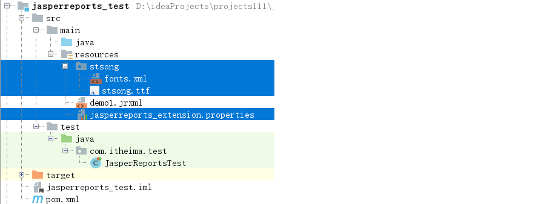
按照上面步骤操作后重新执行单元测试导出PDF文件：

3.4.2 JavaBean数据源方式填充数据
第一步：为了能够避免中文无法显示问题，首先需要将demo2.jrxml文件相关元素字体改为“华文宋体”并将demo2.jrxml文件复制到maven工程的resources目录下
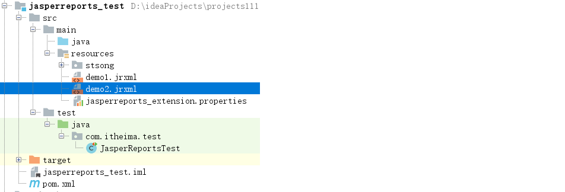
第二步：编写单元测试方法输出PDF文件
xxxxxxxxxxpublic void testReport_JavaBean() throws Exception{ String jrxmlPath = "D:\\ideaProjects\\projects111\\jasperreports_test\\src\\main\\resources\\demo2.jrxml"; String jasperPath = "D:\\ideaProjects\\projects111\\jasperreports_test\\src\\main\\resources\\demo2.jasper"; //编译模板 JasperCompileManager.compileReportToFile(jrxmlPath,jasperPath); //构造数据 Map paramters = new HashMap(); paramters.put("company","传智播客"); List<Map> list = new ArrayList(); Map map1 = new HashMap(); map1.put("tName","入职体检套餐"); map1.put("tCode","RZTJ"); map1.put("tAge","18-60"); map1.put("tPrice","500"); Map map2 = new HashMap(); map2.put("tName","阳光爸妈老年健康体检"); map2.put("tCode","YGBM"); map2.put("tAge","55-60"); map2.put("tPrice","500"); list.add(map1); list.add(map2); //填充数据---使用JavaBean数据源方式填充 JasperPrint jasperPrint = JasperFillManager.fillReport(jasperPath, paramters, new JRBeanCollectionDataSource(list)); //输出文件 String pdfPath = "D:\\test.pdf"; JasperExportManager.exportReportToPdfFile(jasperPrint,pdfPath);}查看输出效果：
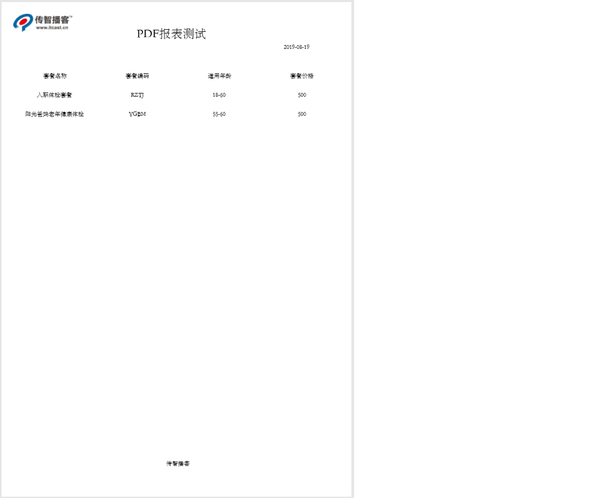
4. 在项目中输出运营数据PDF报表
本小节我们将在项目中实现运营数据的PDF报表导出功能。
4.1 设计PDF模板文件
使用Jaspersoft Studio设计运营数据PDF报表模板文件health_business3.jrxml，设计后的效果如下：

在资源中已经提供好了此文件，直接使用即可。
4.2 搭建环境
第一步：在health_common工程的pom.xml中导入JasperReports的maven坐标
xxxxxxxxxx<dependency> <groupId>net.sf.jasperreports</groupId> <artifactId>jasperreports</artifactId> <version>6.8.0</version></dependency>第二步：将资源中提供的模板文件health_business3.jrxml复制到health_backend工程的template目录下
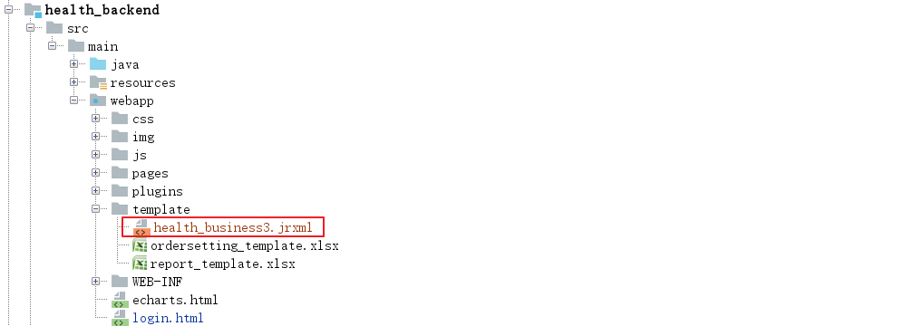
第三步：将解决中问题的相关资源文件复制到项目中
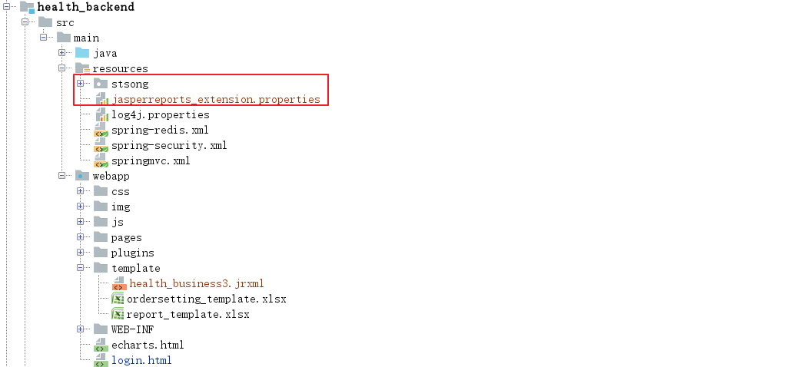
4.3 修改页面
修改health_backend工程的report_business.html页面，添加导出PDF的按钮并绑定事件
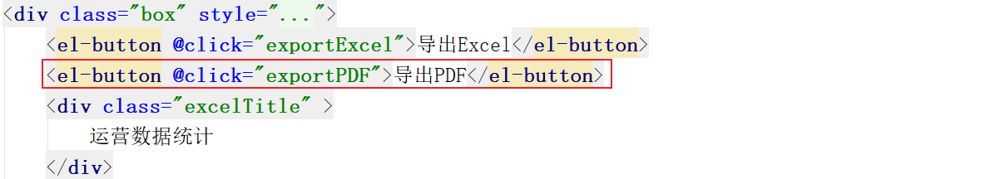

4.4 Java代码实现
在health_backend工程的ReportController中提供exportBusinessReport4PDF方法
xxxxxxxxxx//导出运营数据到pdf并提供客户端下载("/exportBusinessReport4PDF")public Result exportBusinessReport4PDF(HttpServletRequest request, HttpServletResponse response) { try { Map<String, Object> result = reportService.getBusinessReportData(); //取出返回结果数据，准备将报表数据写入到PDF文件中 List<Map> hotSetmeal = (List<Map>) result.get("hotSetmeal"); //动态获取模板文件绝对磁盘路径 String jrxmlPath = request.getSession().getServletContext().getRealPath("template") + File.separator + "health_business3.jrxml"; String jasperPath = request.getSession().getServletContext().getRealPath("template") + File.separator + "health_business3.jasper"; //编译模板 JasperCompileManager.compileReportToFile(jrxmlPath, jasperPath); //填充数据---使用JavaBean数据源方式填充 JasperPrint jasperPrint = JasperFillManager.fillReport(jasperPath,result, new JRBeanCollectionDataSource(hotSetmeal)); ServletOutputStream out = response.getOutputStream(); response.setContentType("application/pdf"); response.setHeader("content-Disposition", "attachment;filename=report.pdf"); //输出文件 JasperExportManager.exportReportToPdfStream(jasperPrint,out); return null; } catch (Exception e) { e.printStackTrace(); return new Result(false, MessageConstant.GET_BUSINESS_REPORT_FAIL); }}